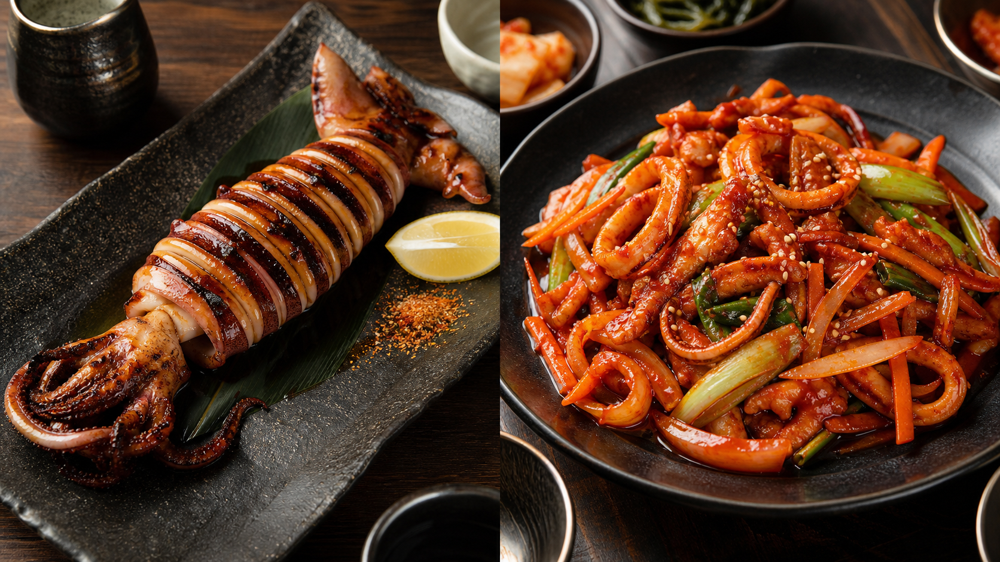
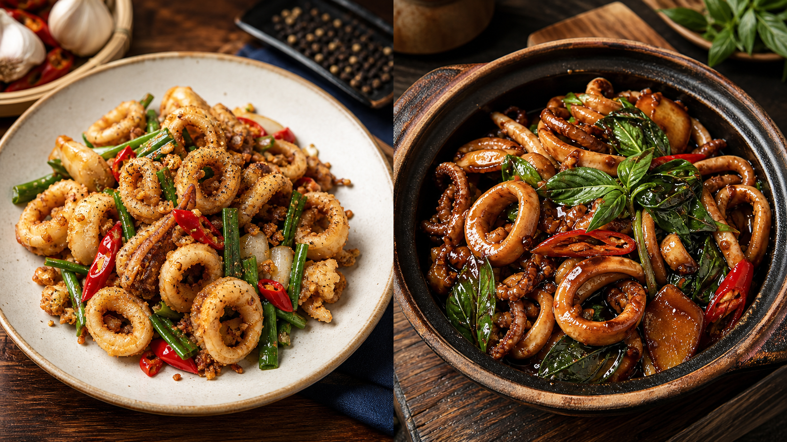
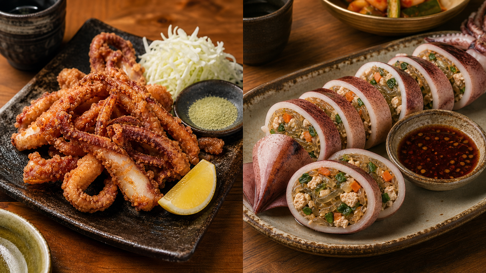
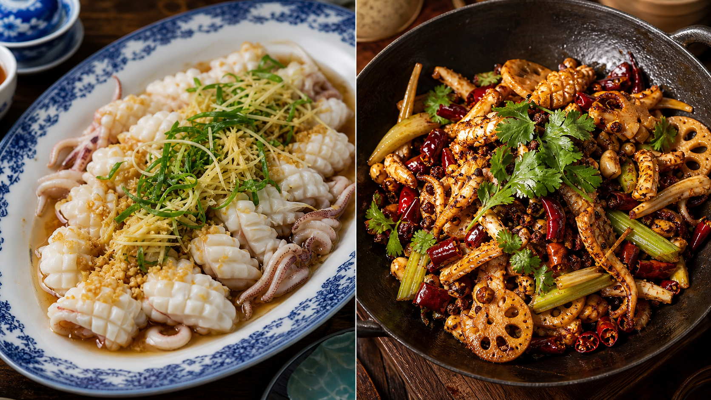
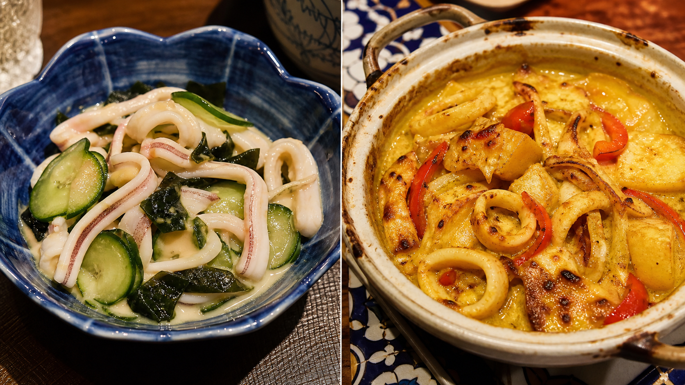

Squid,
Ten Ways
A practical tour of grilling, stir-frying, deep-frying, braising, steaming, stuffing, dry-pot cooking, blanching and baking across East Asian culinary traditions.
Use ← → keys, the buttons, or swipe. Recipes serve 2–4.

Ten traditions, ten techniques
Four rules for tender squid
Remove quill, beak and innards; pat very dry before frying or searing.
Cook 30 seconds–3 minutes for snap and sweetness.
For braises, pass the rubbery middle and cook 25–45 minutes.
Shallow crosshatches help thick bodies curl and hold sauce.
Ikayaki
Grilled Whole Squid
Ingredients
- 2 cleaned whole squid, 250 g each
- 2 tbsp soy sauce
- 1 tbsp mirin
- 1 tbsp sake
- 2 tsp sugar
- 1 tsp grated ginger
Method
- Score bodies every 1 cm; thread or skewer flat.
- Simmer soy, mirin, sake, sugar and ginger 2 minutes.
- Grill squid over very high heat 2 minutes per side.
- Brush repeatedly with tare; grill 1–2 minutes more until lacquered.
Ojingeo-bokkeum
Spicy Stir-fried Squid
Ingredients
- 500 g cleaned squid, sliced
- 1 small onion, 1 carrot
- 2 scallions
- 2 tbsp gochujang
- 1 tbsp gochugaru
- 1 tbsp soy, 1 tbsp rice syrup
- 2 tsp sesame oil, 2 garlic cloves
Method
- Mix chile paste, flakes, soy, syrup, sesame oil and garlic.
- Heat pan until smoking; stir-fry vegetables 2 minutes.
- Add squid and sauce; toss hard 2–3 minutes only.
- Finish with scallion and sesame seeds; serve immediately.
Jiu Yim Sin Yau
Salt & Pepper Squid
Ingredients
- 500 g squid tubes, scored
- 60 g potato starch
- ½ tsp white pepper, ¾ tsp salt
- 500 ml frying oil
- 3 garlic cloves, minced
- 1 red chile, 2 scallions
Method
- Dry squid thoroughly; toss with starch, salt and pepper.
- Fry in batches 60–90 seconds until crisp and curled.
- In a clean wok, sizzle garlic, chile and scallion 20 seconds.
- Toss fried squid through aromatics; season and plate.

Sanbei Youyu
Three-cup Squid
Ingredients
- 500 g squid, bite-size pieces
- 2 tbsp sesame oil
- 2 tbsp soy sauce
- 2 tbsp rice wine
- 8 ginger slices, 6 garlic cloves
- 1 red chile, 1 packed cup Thai basil
- 1 tsp sugar
Method
- Warm sesame oil; fry ginger and garlic until golden.
- Add squid and chile; sear 90 seconds.
- Add soy, rice wine and sugar; bubble 3–4 minutes.
- Reduce until glossy, then fold in basil off heat.
This squid adaptation uses the classic Taiwanese “three cup” flavor architecture.
Ika Geso Karaage
Fried Squid Tentacles
Ingredients
- 400 g squid tentacles
- 1½ tbsp soy sauce
- 1 tbsp sake
- 1 tsp grated ginger
- 1 garlic clove
- 70 g potato starch
- Oil, lemon, shichimi
Method
- Cut tentacles into clusters; marinate with soy, sake, ginger and garlic.
- Drain well and coat generously in potato starch.
- Fry in small batches 2–3 minutes until craggy and crisp.
- Drain, dust with shichimi and serve with lemon.

Ojingeo-sundae
Stuffed Steamed Squid
Ingredients
- 2 whole squid, cleaned
- 80 g cooked glass noodles, chopped
- 120 g firm tofu, squeezed
- 80 g minced pork or mushrooms
- ½ carrot, 2 scallions
- 1 egg, 1 tsp sesame oil
Method
- Mix noodles, tofu, pork, vegetables, egg and sesame oil.
- Fill squid bodies only two-thirds full; secure openings.
- Steam over medium heat 15–18 minutes.
- Rest before slicing into thick rounds; serve with soy-vinegar.
Jing Sin Yau
Steamed Garlic Squid
Ingredients
- 500 g cleaned squid, scored
- 4 garlic cloves, minced
- 1 tsp grated ginger
- 2 scallions, julienned
- 1½ tbsp light soy sauce
- 1 tsp sesame oil
- 1 tbsp neutral oil
Method
- Arrange squid in one layer; scatter garlic and ginger.
- Steam over vigorously boiling water 4–5 minutes.
- Drain excess liquid; spoon over soy and sesame oil.
- Top with scallion and pour over smoking neutral oil.

Gan Guo Youyu
Dry-pot Squid
Ingredients
- 500 g squid, scored
- 150 g lotus root, thinly sliced
- 2 celery stalks
- 8 dried chiles
- 1 tsp Sichuan peppercorn
- 1½ tbsp doubanjiang
- 3 garlic cloves, ginger, cilantro
Method
- Blanch lotus root 2 minutes; drain. Flash-blanch squid 20 seconds.
- Wok-fry chiles and peppercorn in oil until fragrant.
- Add doubanjiang, garlic and ginger; fry until red oil blooms.
- Add vegetables and squid; toss 2 minutes, finish with cilantro.
Ika no Sumiso-ae
Blanched Squid with Miso
Ingredients
- 350 g squid, thin strips
- 1 small cucumber, salted
- 40 g rehydrated wakame
- 2 tbsp white miso
- 1½ tbsp rice vinegar
- 1 tbsp sugar
- ½ tsp Japanese mustard
Method
- Whisk miso, vinegar, sugar and mustard until smooth.
- Blanch squid 30–45 seconds; shock in ice water and dry.
- Squeeze cucumber dry; combine with squid and wakame.
- Dress just before serving; keep cool, not icy.

Caril de Lula
Baked Coconut Curry Squid
Ingredients
- 500 g squid rings
- 250 g potato, 1.5 cm cubes
- ½ onion, ½ red pepper
- 2 tbsp curry powder
- 200 ml coconut milk
- 100 ml stock
- 2 garlic cloves, 1 bay leaf
Method
- Parboil potato 6 minutes. Sauté onion, pepper and garlic.
- Bloom curry powder; add coconut milk, stock and bay.
- Simmer potatoes 8 minutes; fold in squid for 1 minute.
- Transfer to casserole and bake 10–12 minutes until bubbling.
Choose by texture and appetite
Ikayaki
Ojingeo-bokkeum
Dry-pot squid
Salt & pepper squid
Geso karaage
Steamed garlic squid
Ojingeo-sundae
Three-cup squid
Ika sumiso-ae
Macanese curry bake
Blanching or steaming
Cook the coastline
The same ingredient becomes smoky street food in Japan, chile-bright anju in Korea, crisp banquet fare in Guangdong, basil-scented comfort in Taiwan, and coconut curry in Macau.
- Grill it
- Stir-fry it
- Deep-fry it
- Braise it
- Karaage it
- Stuff & steam it
- Steam it
- Dry-pot it
- Blanch & dress it
- Bake it
External links open in a new tab. YouTube links use precise recipe searches so they remain functional as individual uploads change.